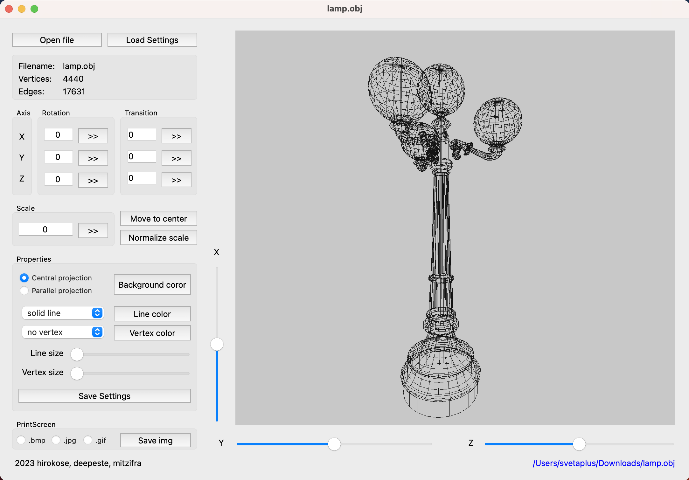
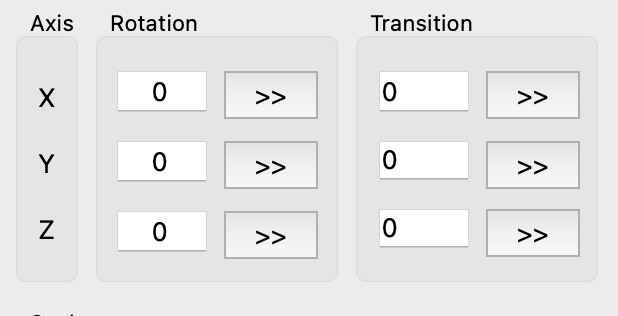
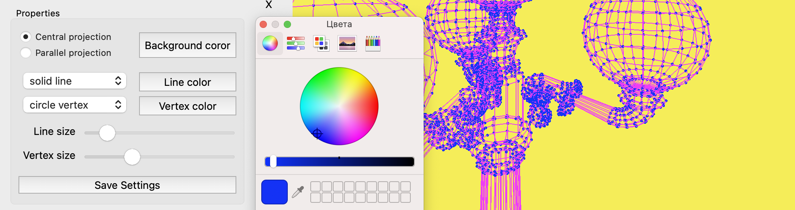

3DViewer V1.0
Документация по использованию
Описание программы
Программа предназначена для просмотра в 3D формате файлов типа .obj. Программа состоит из зоны управления (меню) и поля (сцены) для отображения объекта. В качестве разделителя целой и дробной части для всех полей ввода используется запятая.
Установка программы
Для установки программы введите в терминале команду make install. Программа устанавливается по адресу build/3DViewer.
Удаление программы
Для удаления программы используйте команду make uninstall.
Открытие файла
Чтобы выбрать и открыть файл для просмотра, необходимо нажать на кнопку [ Open file ], после чего откроется специальное диалоговое окно.
Информация о файле
Информация о файле отображается в инфобоксе в левой верхней части программы:
- Filename: название файла;
- Verctices: количество вершин;
- Edges: количество ребер (учитываются не уникальные, а все отрисованные ребра);
Управление позицией объекта
Перемещение и вращение объекта осуществялется пошагово, на заданное посредством специальных полей расстояние. Поддерживвается ввод как целых, так и десятичных значений. 
- Axis - оси, относительно которых происходит вращение/перемещение;
- Rotation - вращение объекта вокруг соответствующей оси. Шаг вращения задается в градусах;
- Transition - перемещенение объекта вдоль соответствующей оси;
Три слайдера, расположенные справа (ось X) от сцены и под ней (оси Y и Z) позволяют произвольно вращать объект вокруг соответствующих осей.
Измение масштаба объекта (блок Scale)
Поле для ввода Scale ожидает коэффициент, который будет применен к текущему размеру объекта. Поддерживается ввод как целых, так и дробных значений в десятичном формате.
Отрицательный коэффициент дополнительно отзеркаливает объект.
Специальная кнопка [ Normalize scale ] - оптимизирует размер объекта так, чтобы он целиком поместился в поле отображения (на сцену).
Настройки отображения (Properties)
Программа позволяет гибко настраивать сцену и отображение объекта:
- Выбирать тип проекции - центральная (Central) или параллельная (Paralell);
- Настраивать цвет фона (сцены), линий и вершин;
- Выбрать тип линии - прямая (solid) или пунктирная (dashed);
- Выбрать форму отображения вершин - квадратные (square) или круглые (circle);
- С помощью слайдеров настроить размер вершин и толщину линии;
Сохранение и загрузка настроек проекта
Кнопка [ Save settings ] в блоке Properties позволяет сохранить текущие настройки сцены и отображения объекта.
Кнопка [ Load settings ] загружает и применяет последние сохраненные настройки.
Создание изображений и скринкастов
Программа позволяет сохранять скрин изображения в выбранном формате (.bmp или .jpg) с помощью соответствующих кнопок-переключателей и кнопки [ Save img ].
Полный функционал находится в разработке.
Правовая информация
Все права на использование и распространение данного ПО принадлежат его разработчикам: hirokose(TL), deepeste и mitzifra, а так же АНО "Школа 21".
2023 © 21 SCHOOL